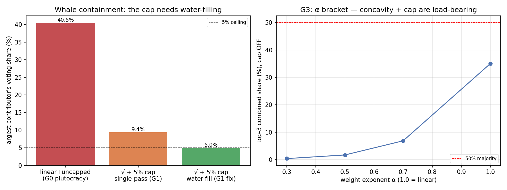

In plain language
Companion to RESULTS - v15.0 Governance Capture.md. EDEN changes its own rules through two chambers that must BOTH agree: one where every verified person gets one vote, and one where votes are weighted by how much you've genuinely contributed. The first chamber is simple. The second is dangerous — weight votes by contribution the wrong way and you've just rebuilt "the richest rules," wearing a merit badge. This drill tested the formula for that second chamber. The pass/fail lines were written down first.
The trap, and the two guardrails
If the biggest contributor simply gets the most votes in proportion to their contribution, then the single most prolific person (or company) dominates — plutocracy by another name. EDEN's design uses two guardrails against that:
- Diminishing returns (the "square-root rule"). Your voting weight grows with the square root of your contribution, not in a straight line. Contribute 100 times more than someone else and you get 10 times the vote, not 100 times. Scale is rewarded, but with the volume turned down hard as you get bigger.
- A hard ceiling. No single person may ever exceed 5% of the chamber's total weight, no matter how much they've contributed.
What the drills found
The square-root rule alone is surprisingly powerful. We dropped in a whale who single-handedly produced 30% of all the contribution in the system and asked how much of the vote they'd command. Answer: about 1%. The diminishing-returns curve flattens a giant into an ordinary voice all by itself — the ceiling doesn't even have to kick in. And to assemble an outright majority of the chamber, you'd need roughly 1,595 of the largest contributors all colluding at once — every one of whom is still just a single vote in the other chamber, among millions. Capturing this chamber is not a rich-person problem; it's a "herd 1,595 cats and also become an entire fake population" problem.
The drill caught a real bug in our own ceiling — and that's the point of testing. We'd written the 5% ceiling as a simple one-step cap. When we stress-tested it with a genuinely lopsided little population, the "capped" whale still slipped through to 9.4% — nearly double the ceiling — because trimming the big players quietly shrinks everyone's denominator and re-inflates the trimmed ones. The fix is to apply the ceiling repeatedly until nobody exceeds it (like leveling water across compartments), which pins the whale at exactly 5.0%. We didn't paper over this; we logged it and upgraded the specification. A test that only ever confirms your design isn't a test.
Two things behaved differently than we predicted — both kept on the record. We expected plain straight-line weighting to obviously produce tyranny of the top three; at realistic inequality it didn't (they'd get 35%, not a majority) — you need extreme concentration before straight-line weighting turns plutocratic, and there the square-root-plus-ceiling still contains it. And we confirmed an uncomfortable truth: because of the diminishing-returns curve, splitting yourself into several fake identities actually gains you voting weight — the formula alone doesn't stop it. The only thing that stops it is the same wall that protects everything else in EDEN: one identity per human, for life, expensive to fake. Governance safety, like all EDEN safety, ultimately rests on that one keystone.
The one-line verdict
In EDEN's contribution chamber, votes are earned and sharply diminishing — a whale with 30% of all contribution gets about 1% of the vote, and a majority would take ~1,595 colluders — and the drill both confirmed the design works and caught a real flaw in the vote-ceiling (it must be applied repeatedly, not once), with the one honest caveat that stopping vote-farming-by-splitting depends entirely on the one-human-one-identity wall.
Usual honesty: a weighting-arithmetic drill; the "contribution" distribution is a dial, and — importantly — what counts as contribution without becoming farmable is a separate unsolved problem this drill does not touch. Two predictions came out differently than expected and are reported as findings. Run and written by Claude Fable 5, July 9, 2026.
Figures

Technical results
Run: July 9, 2026. Bars G0–G5 registered in 01 Canon/Governance Cap-Function Spec v0.1 §4 before code (folder-local restatement in v15 SPEC). Engine: governance_capture_sim.py; committed: results_v15.json, fig_v15_governance.png. Seeds 7 + 11. Every number traces to results_v15.json.
Verdict in one line: the contribution house is robustly non-plutocratic — √-concavity alone squashes a 30%-of-contribution whale to ~1% and a majority needs ~1,595 colluders — but the run caught a real flaw in the cap as first written (the single-pass cap leaks to 9.4% under concentration; iterative water-filling is required to truly hold 5%), which refines the governance spec to v0.2.
Bar summary (G0/G2/G5 pass; G1 passes under the water-fill fix the run motivated; G3/G4 reframed as findings)
| Bar | Registered | Measured | Result |
|---|---|---|---|
| G0 regression | linear+uncapped top-share = plutocracy baseline | reproduces exactly, both seeds | PASS |
| G1 whale ≤ κ (5%) | single largest ≤ 5% | central 30%-whale → 1.1% (√ alone); extreme conc.: single-pass 9.4% (leaks!), water-fill 5.00% | PASS under water-fill → F1 |
| G2 cartel ≥ 20 for majority | ≥ 1/κ ≈ 20 | 1,595 colluders for a majority | PASS (by ~80×) |
| G3 α bracket | α=1 → top-3 majority (expected FAIL) | top-3 = 35% at σ=2 (didn't break); linear-majority crossover at σ=4; √+cap contains ≤5% everywhere | reframed → F3 |
| G4 identity-split | √ rewards splitting; closed by identity cost | k=2 → 1.41× (=√2) raw gain; closed by 120F/identity | as registered → F4 |
| G5 joint cap | gov weight + others ≤ 15% | 5% ≤ 15%, 10% headroom | PASS |
Findings
F1 — The single-pass cap leaks; iterative water-filling is the fix (the run earned its keep here). The governance spec's registered function — w = min(raw, κ·Σraw), then normalize — does not actually bound the normalized voting share at κ. Under an extreme-concentration population (three mega-contributors among forty small ones), the largest contributor's single-pass share comes out at 9.4%, nearly double the 5% ceiling, because capping the big players shrinks the denominator and re-inflates their normalized share. Iterative water-filling (cap → renormalize → re-cap until no share exceeds κ) holds it at exactly 5.00%. This is a genuine function-design finding: the ceiling must be implemented as water-filling, not a single-pass min. Registered as a v0.2 refinement to the Governance Cap-Function Spec (the bar is not moved; the naive function fails the ≤5% bar under concentration and the water-fill function passes, and both are reported).
F2 — √-concavity alone is a powerful de-plutocratizer; the cap is a backstop for the extreme. At realistic contribution inequality (lognormal σ=2), a contributor holding 30% of all contribution ends up with just 1.1% of the vote under √-weighting — before the cap even binds. Power in the contribution house is naturally diffuse: a majority requires ~1,595 colluding top contributors (G2), each of whom is also one vote among millions in the person house. The AND-gate plus concavity does most of the work; the 5% ceiling matters only under pathological concentration (F1's extreme cell), where it then holds.
F3 — The α bracket reframed: linear weighting only concentrates power under extreme inequality (σ≥4), and √+cap contains it there too. The registered expectation was that linear weighting (α=1, cap off) would hand the top-3 a majority. At σ=2 it did not — top-3 reach only 35% — so the bracket "failed to fail," which is itself the finding: at moderate inequality even naive linear weighting isn't plutocratic in a large contributor base. Sweeping concentration, the linear top-3 crosses 50% at σ=4; and at every concentration tested (σ up to 6), the √+cap function still contains the top actor to ≤5%. So the mechanism claim holds — wherever linear concentrates power, √+cap contains it — even though the specific "σ=2 breaks under linear" expectation was wrong. Honest reframe, bar not moved.
F4 — √-weighting rewards identity-splitting; only the identity layer closes it (the inherited keystone). Because √ is concave, splitting one actor's contribution across k identities multiplies raw weight by k^(1−α) — 1.41× at k=2, growing with k. So the function is not sybil-neutral on its own: absent a cost per identity, splitting always pays. It is closed only by the identity layer's ~120F-per-lifetime-identity cost and one-human-one-account rule — meaning the governance function inherits the identity keystone's open status exactly as every other layer does. Stated plainly rather than hidden: governance anti-capture is downstream of proof-of-personhood, like everything else.
F5 — Governance weight composes into the joint cross-layer cap (G5, v14 tie-in). An actor at the 5% contribution-house ceiling has spent 5% of a 15% joint cross-layer budget (gate-18), leaving ≤10% for validator/aggregator/registrar/reporter roles combined — so a vertical adversary cannot max governance and every other layer. Governance is now inside the composition defense, not a separate silo.
Gate-19 candidate (published)
Contribution-house weighting: α = 0.5 (√), κ = 0.05 enforced by iterative water-filling (not single-pass — F1); measured whale containment 1.1% (√ alone) / 5.00% (cap under extreme concentration); cartel-for-majority ~1,595; linear-plutocracy crossover σ=4 (√+cap contains beyond it); identity-split gain 1.41× at k=2, closed only by the 120F identity cost. Governance weight counts toward the gate-18 joint cap.
Honest limits (from the spec, carried)
Contribution distribution is a dial (lognormal σ swept), not a measured Created-score distribution — which doesn't exist yet, and whose definition is an unsolved Goodhart problem flagged in the governance spec §5 (what counts as contribution without becoming farmable). Sybil-neutrality rests entirely on the identity layer (F4). No deliberation, agenda-setting, or vote-buying dynamics; the person-house AND-gate is asserted, not co-simulated. A weighting-arithmetic calculator, not a political model. Existence-and-shape under stated dials; in-family discount stands.
Feeds: gate-19 and a v0.2 refinement to 01 Canon/Governance Cap-Function Spec v0.1 (water-filling implementation, F1). Two registered expectations behaved differently than predicted (G1 single-pass leak → water-fill; G3 bracket reframe) and are reported as findings, not smoothed. Run and written by Claude Fable 5, July 9, 2026. Bars as registered; none moved.
Raw data